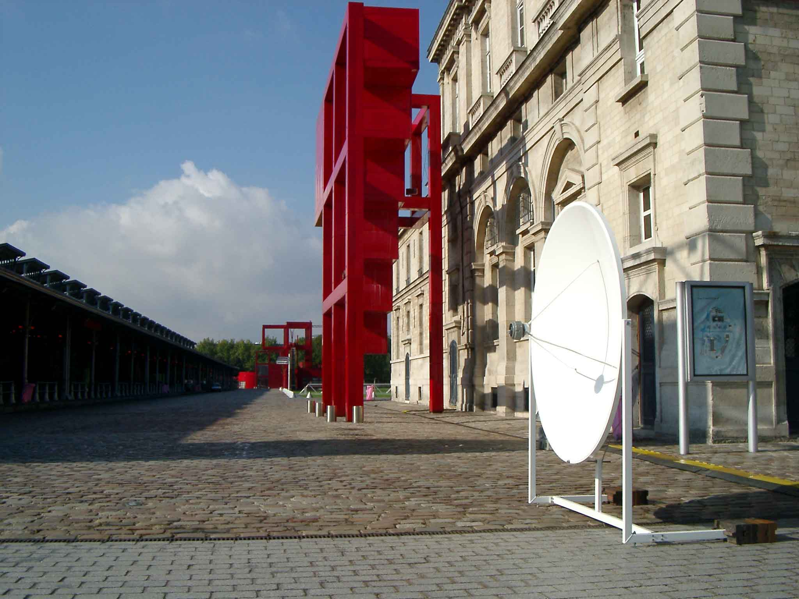

Villette Arts Numériques, La Grande Halle, Parc de la Villette, Paris
2002
The installation consists of two aluminium parabolic reflectors that are facing each other. The reflectors are
similar that are used as satellite antennas. The distance between the two mirrors is preferably at least 100
meters. In this exhibition the reflectors were placed at the open space in front of the exhibition building.
Each of the reflectors has a speaker in their focus point. The speakers are playing out loud high frequency
sound reflected into a narrow beam between the dishes. The change of the frequency is controlled by a geiger
meter measuring the changes in the local radioactive background radiation.
Inside the sound beam between the reflectors it is possible to hear a third sound, so called modulation sound,
which appears to come from all around. The frequency of this sound is the difference of the frequencies of the
two original sounds. Since the frequencies of the original sounds coming out of one speakers are constantly
changing also the modulation frequency is changing accordingly.
